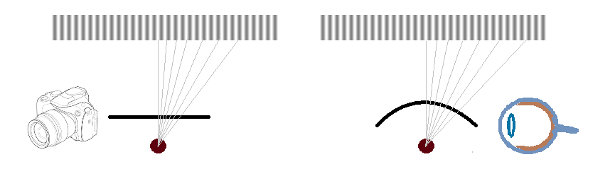

Solid Angle and Perspective
When light is registered in a human eye or a digital camera, it is the accumulation of all the light from a cone subtending a solid angle whose size depends on the resolution of the sensor (retina or image sensor). It also means that the perspective in images is created as a result of a cone extending with distance. Now, interesting question is what is the difference between perspective in computer graphics and the real world.

In the drawing above on the left is how light is registered in an image sensor of a digital camera. On the right is a human eye. The striped bar is an object at a constant z distance. The rays are being cast at regular angles simulating the solid angle.
Because the form of the image sensor and retina is different the rays on the left cut increasing areas of the sensor while on the right the resulting intervals are approximately equal. As a result we should expect different final perceived image. Note that we don't really notice this because we only have 100% of visual acuity at a small window in the center - foveal system - that is only 2° in size. Here is a WebGl2 demo that tries to simulate the behaviour.
Also this is a good place to recommend two books on visual perception: Sensation and Perception: An Integrated Approach by Harvey Richard Schiffman and Sensation and Perception by E. Bruce Goldstein.
- Close
- Canvas
- VS
- PS